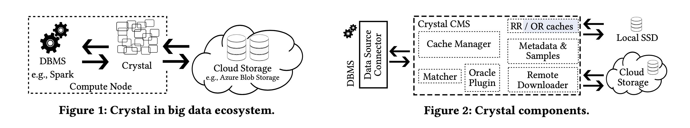

Crystal: A Unified Cache Storage System for Analytical Databases
这个东西的大致思想上是：
- 针对单次Query，对Table + Conjuncts得到的数据进行缓存，称为Request Region.
- 定期对历史Query以及产生的Request Region进行分析，Query扩展，数据合并，生成新的Cache，叫做Oracle Region. 对应的这个模块叫做Oracle Module, 用户可以定制。
- 对未来的Query尝试分解为Oracle Regon + Multiple Request Regions, 对于没有覆盖的Region则需要去source拿然后缓存下来（成为Request Region）
- 整个过程比较智能，难点在于需要分解Preidcates，并且对Predicates进行改写，然后根据Predicates映射到对应的Region上面。整个过程都是自动的，不需要用户自己搞物化视图什么的。
目前Cache Storage System存在的一些问题
- 实现上都不够通用造成造成每个DBMS都需要实现一套。
- 源数据实现格式上并不一定是最优的，每次拿过来都需要做转换。
- Cache使用率非常低，即便是按照block/row group这样级别缓存，使用率也很低。
- 许多remote storage都支持push-down特性，但是大部分cache实现都没有考虑这个东西，而是拿过来放在本地，然后再做push-down.
- Every DBMS today implements its own caching layer tailored to its specific requirements, resulting in a lot of work duplication across systems, reinventing choices such as what to cache, where to cache, when to cache, and how to cache.
- Databases increasingly support analytics over raw data formats such as CSV and JSON, and row-oriented binary formats such as Apache Avro [6] – all very popular in the data lake [16]. Com- pared to binary columnar formats such as Apache Parquet [7], data processing on these formats is slower and results in in- creased costs, even when data has been cached at compute nodes. At the same time, it is expensive (and often less desirable to users) to convert all data into a binary columnar format on storage, par- ticularly because only a small and changing fraction of data is actively used and accessed by queries.
- Cache utilization (i.e., value per cached byte) is low in existing solutions, as even one needed record or value in a page makes it necessary to retrieve and cache the entire page, wasting valuable space in the cache. This is true even for optimized columnar for- mats, which often build per-block zone maps [21, 40, 48] (min and max value per column in a block) to avoid accessing irrelevant blocks. While zone maps are cheap to maintain and potentially useful, their effectiveness at block skipping is limited by the fact that even one interesting record in a block makes it necessary to retrieve it from storage and scan for completeness.
- Recently,cloud storage systems are offering predicate push-down as a native capability, for example, AWS S3 Select [4] and Azure Query Acceleration [35]. Push-down allows us to send predicates to remote storage and avoid retrieving all blocks, but exacerbates the problem of how to leverage it for effective local caching.
Crystal架构和组件如下图所示:
- Crystal作为单独服务存在，但是可以和DBMS部署在一台机器上，减少network traffic.
- DBMS和Crystal之间的数据通信完全可以使用local disk file/memory完成， 所以之间主要是控制信息的传递。
- 目前Crystal只能用于单表Scan上的Cache, 所以可以认为它现在还没有办法取代物化视图。当前使用Parquet作为Cache Format，但是其实使用customized format也没啥问题。
- Cache分为RR/Request Region(可以认为是满足short-term query), 以及OR/Oracle Region(后台将Cache泛化来满足未来查询long-term query). RR之间可以相互重叠。
- 读取的时候将谓词转换成为Gandiva, 然后去查询得到Apache Arrow格式，然后存储为Parquet文件到本地作为Cache.

Crystal manages fast local storage (SSD) as a cache and talks to remote storage to retrieve data as needed. Unlike traditional file caches, it determines which regions (parts of each table) to transform and cache locally in columnar form. Data may be cached in more than one region if necessary. Crystal receives “queries” from clients, as requests with push-down predicates. It responds with local (in cache) or remote (on storage) paths for files that cover the request.
We note that Crystal’s cached regions may be considered as materialized views [20, 27, 44, 45] or semantic caches [14, 29, 30, 41– 43, 47], thereby inheriting from this rich line of work. Our caches have the additional restriction that they are strictly the result of single-table predicates (due to the nature of the data source API).
Crystal CMS maintains two local caches – a small requested region (RR) cache and a large oracle region (OR) cache – corresponding to short- and long-term knowledge respectively. Both caches store data in an efficient columnar open format such as Parquet. Crystal receives “queries” from connectors via the Crystal API. A query consists of a request for a file (remote path) with push-down predicates. Crystal first checks with the Matcher to see if it can cover the query using one or more cached regions. If yes (cache hit), it returns a set of file paths from local storage. If not (cache miss), there are two options:
- (1) It responds with the remote path so that the connector can process it as usual. Crystal optionally requests the connector to store the downloaded and filtered region in its RR cache.
- (2) It downloads the data from remote,applies predicates,stores the result in the RR cache, and returns this path to the connector.
The cached regions of Crystal are stored as Apache Parquet files. Crystal leverages Apache Arrow for reading and writing snappy encoded Parquet files. Internally, Parquet is transformed into Arrow tables before Crystal creates the semantic regions. Gandiva, which is a newly developed execution engine for Arrow, uses LLVM compiled code to filter Arrow tables [8]. As this promises superior performance in comparison to executing tuple-at-a-time filters, Crystal translates its restrictions to Gandiva filters. When Crystal builds new Parquet files to cache, the filters are compiled to LLVM and executed on the in-memory Arrow data. Afterward, the file is written to disk as snappy compressed Parquet file. If a file is accessed the first time, Crystal creates a sample that is used to predict region sizes and to speed up the client’s query planning.
下面举个例子来说明整个过程：
假设query是 `select t1.a, t1.b, t2.c, t2.d from t1, t2 where ( t1.a > 1 and t1.b > 1 and t2.c > 10)`
对每个table对应的predicates进行normalization, 就是变为conjuncts, 然后去查询并且缓存结果
- select from T1 where (t1.a > 1 and t1.b >1) 保存为 RR(T1)
- select from T2 where (t2.c > 10) 保存为 RR(T2)
下次相同的查询也可以使用RR(T1)和RR(T2). 然后对于下面的query其实也可以使用RR(T1)
- select from T1 where (t1.a > 1 and t1.b > 1 and t1.c > 10)
RR的缺点就是容易overfit（还有许多小文件问题）, 所以需要用OR来解决这个问题。解决办法大约是，统计历史上每个RR的使用频率，一个是用于做LRU eviction, 另外一个就是判断那些列使用情况比较多。假设发现t1.a 这个列使用很多（但是具体指变化比较大），而t1.b > 1使用很多，那么可以使用
- select t1.a, t1.b, t1.c from T1 where (t1. b > 1)
来构造OR（至于怎么构造OR论文里面有详细说明）. 那么接下来对于T1查询使用Cache命中率就会提高很多。
值得注意的是，Region的使用并不只是简单地累加，可能还需要增加额外的表达式，比如下面这个case
- select T1.a from T1 where T1.a > 20 // 保存在RR0
- select T1.a from T1 where T1.a < 50 // 保存在RR1
对于接下来的查询 select T1.a from T1 where T1.a > 10 and T1.a < 100, 可以使用RR0+RR1但是需要做一些改进：
- RR0 ( +predicate: T1.a < 100)
- RR1( + predicate: T1.a > 10 and T1.a <= 20)